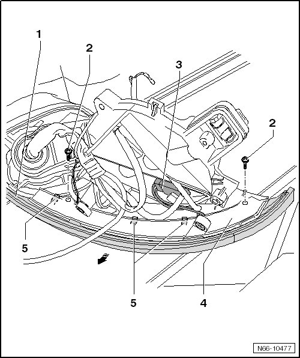

Exterior Mirror. From 11.2006
Exterior Mirror. from 11.2006
Side Turn Signal
Removing
• LEDs with a long service life are installed in the side turn signals instead of standard bulbs.
• Because of that, it is not necessary to replace bulbs. If there is damage, the entire turn signal assembly must be replaced.

- Mirror Glass, Removing, refer to --> [ Mirror Glass ] Mirror Glass
- Remove the mirror motor. Refer to --> [ Mirror Motor ] Mirror Motor
- Remove mirror housing, refer to --> [ Mirror Housing ] Mirror Housing
- Remove the 2 screws - 2 -.
- Carefully loosen the 3 hooks - 5 -.
- Remove the side turn signal - 1 - from the assembly piece - 4 - - arrow -.
- Disconnect the connector - 3 -.
Installing
To install, perform the steps used for removal in reverse order.